Bütçeniz kısıtlıysa
→ Amerikan panel kapı
Showroom satış sıralaması ve artı/eksi özeti — teknik seçim rehberi ve fiyat paketleri ayrı sayfalarda.
Rehber · tercih sıralaması
Bu sayfanın işi: Osmaniye showroom’umuzda en çok tercih edilen lake, melamin, kompozit ve Amerikan panelin artı/eksileri. Odaya göre seçim için oda kapı modelleri; daire paketi için ev iç kapı modelleri ve fiyatları.
En çok tercih edilen kapı modelleri hangileri diye sorduğunuzda dürüst cevap: her evin ihtiyacı farklı. Yine de satış verilerimiz hangi serilerin daha sık seçildiğini net gösteriyor; aşağıda bu sıralamayı ve nedenlerini paylaşıyoruz.
Galeri
Üzerine gelin, tıklayınca tam boy açılır — lake, melamin, kompozit ve amerikan panel.
Lake
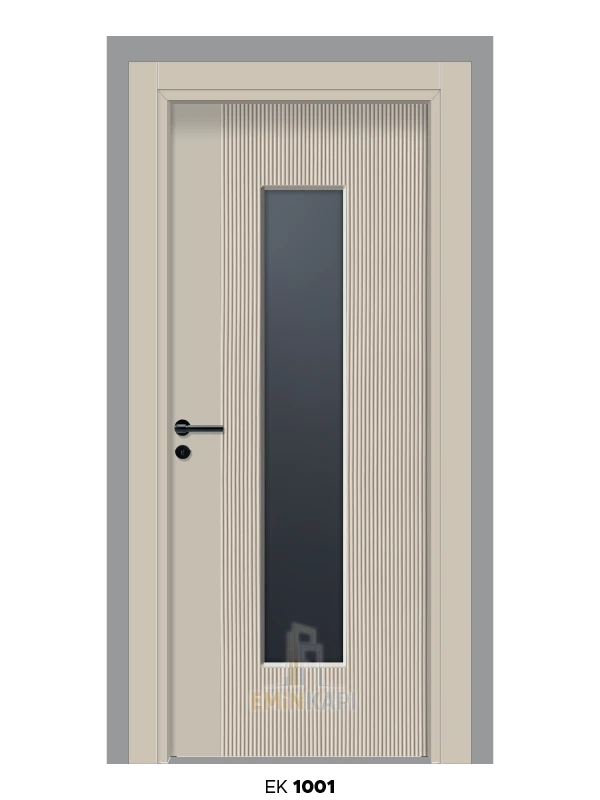
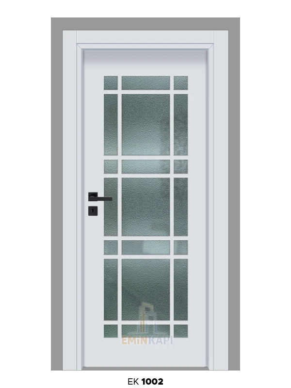
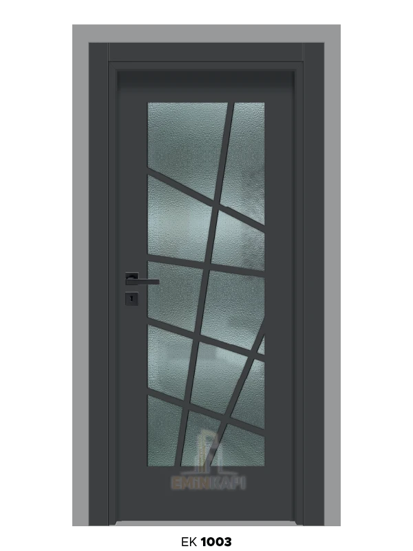
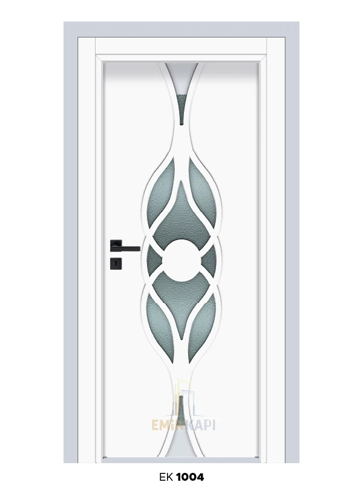
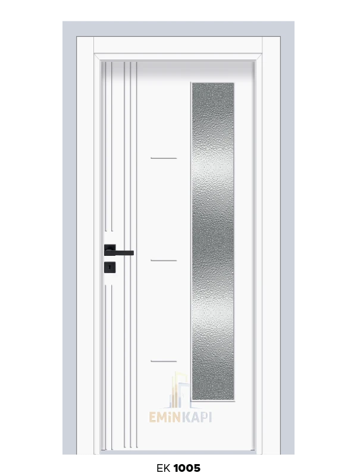
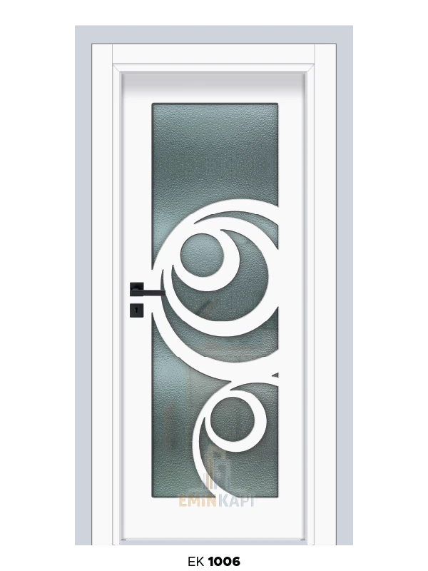
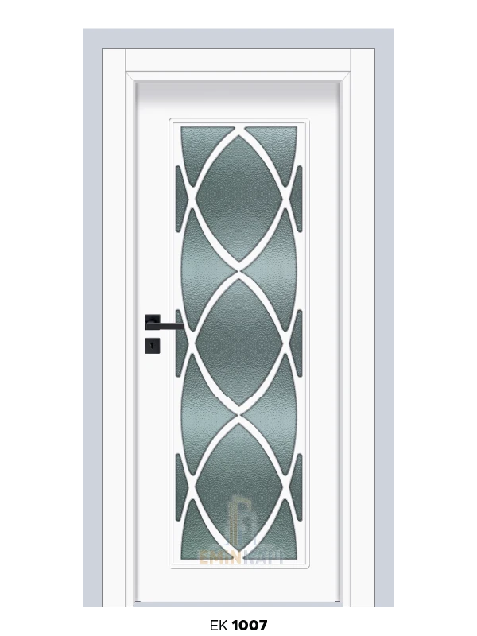
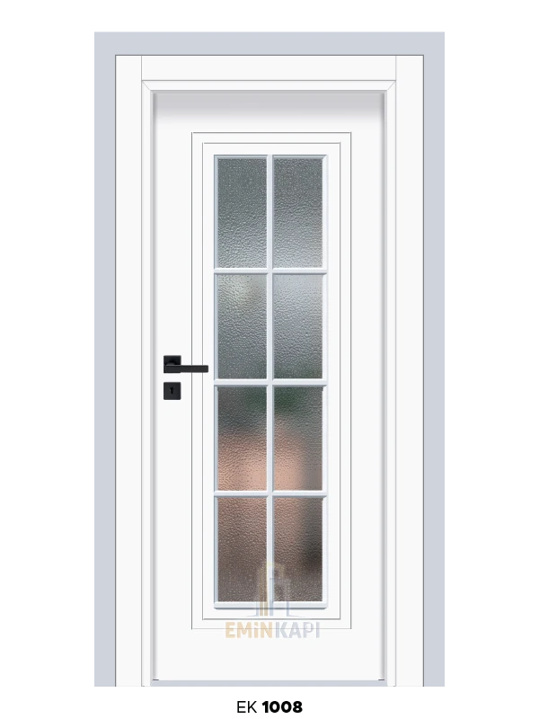
Tam lake katalog: lake kapı sayfası.
Melamin

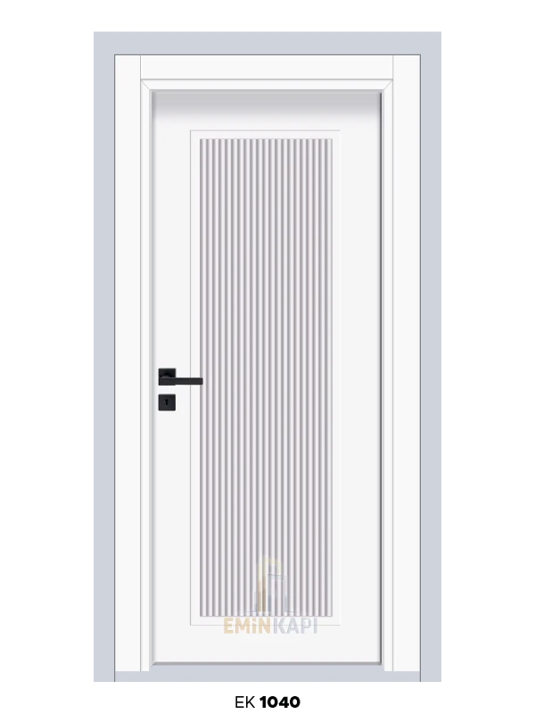
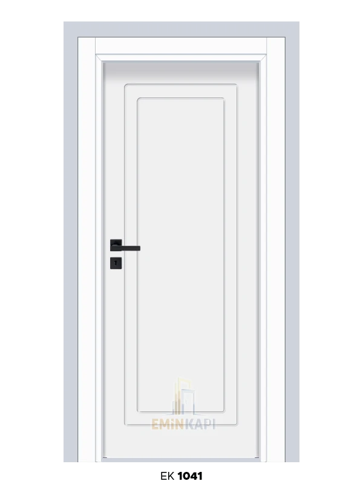
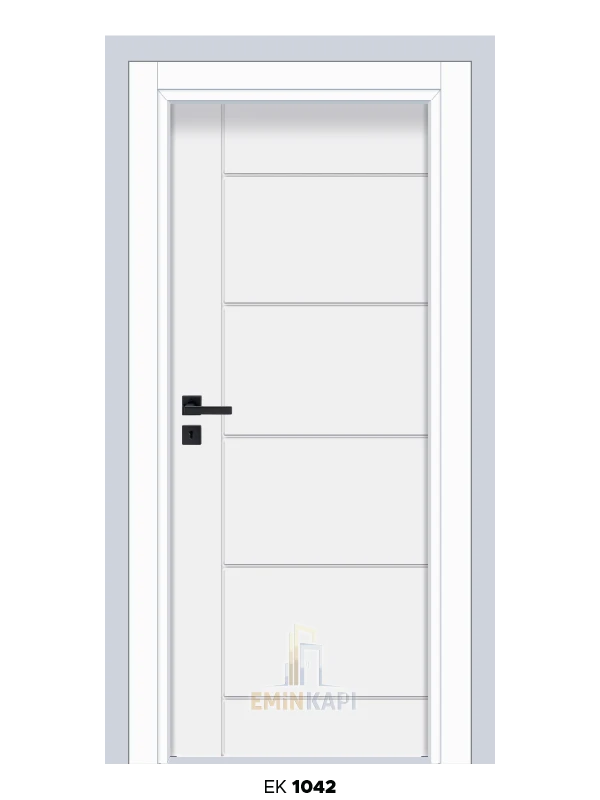

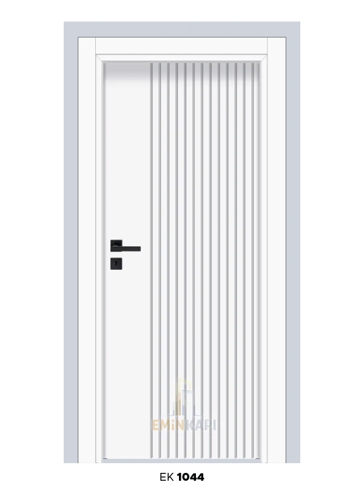
Kompozit

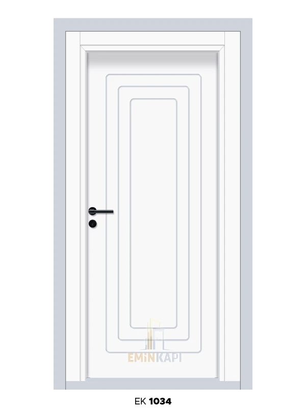
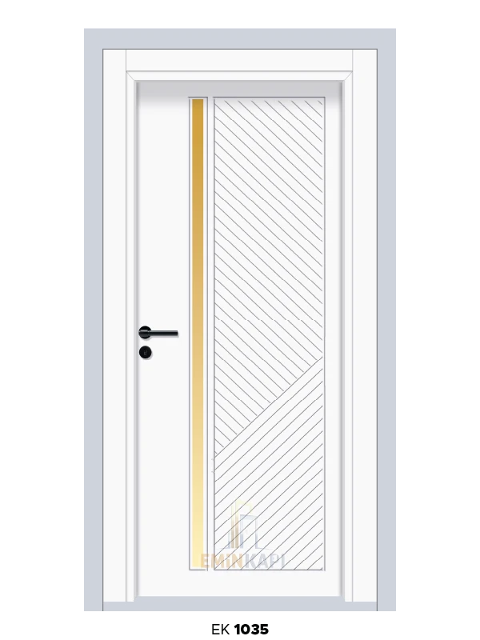
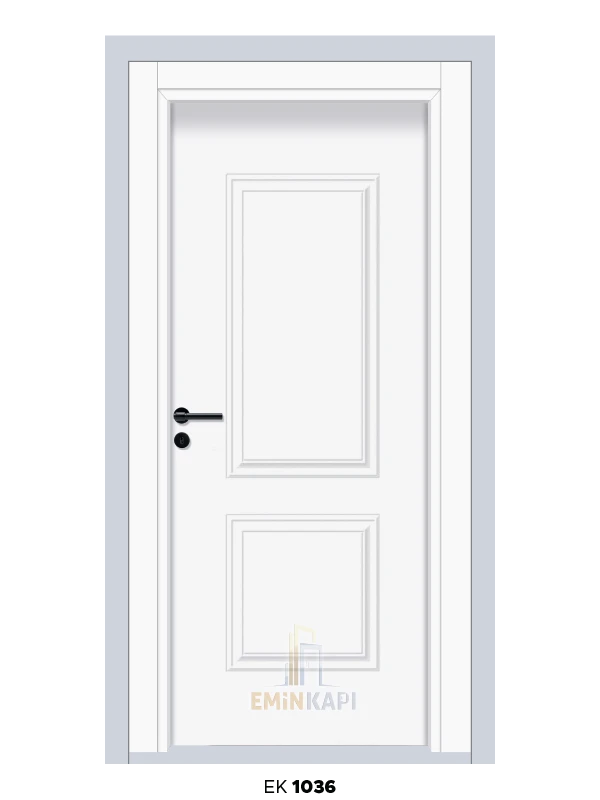
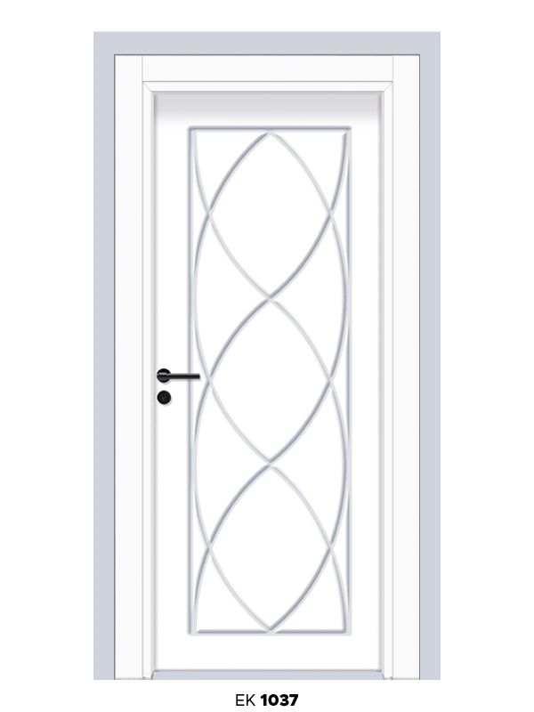
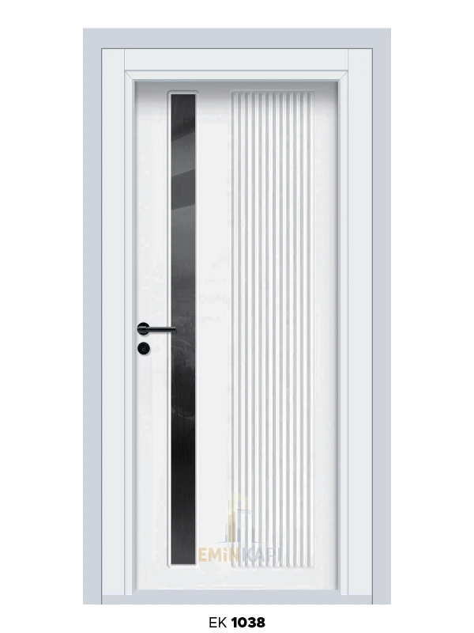

Amerikan panel


Showroom’umuza gelen müşterilerimizin ilk baktığı ve “vay be” dediği kapılar hep lüks lake iç oda kapısı modelleri oluyor. Neden mi? Çünkü lake kapıların o parlak, ayna gibi yüzeyi gerçekten göz alıcı.
15 yıldır lake kapı satıyoruz ve müşteri memnuniyeti her zaman yüksek. Lake kapının en büyük avantajı estetik görünümü. Özellikle modern dekorasyonlu evlerde lake kapılar mükemmel uyum sağlıyor.
Biz lake kapıları genelde yatak odaları, salon ve misafir odalarında kullanıyoruz. Çocuk odası ve mutfak gibi yoğun kullanım alanlarında pek önermiyoruz.
Eğer evinizde çocuklar varsa veya kapılarınızın çok dayanıklı olmasını istiyorsanız, biz size melamin panel iç oda kapısı öneriyoruz. Melamin, bizim “tankımız” dediğimiz kapı türü.
Melamin kaplama, çizilmeye, darbelere ve neme karşı inanılmaz dirençli. Biz showroom’umuzda müşterilere melamin kapıyı bıçakla çizmeyi bile öneriyoruz – çizilmiyor!
Melamin kapıyı her odada rahatlıkla kullanabilirsiniz. Özellikle çocuk odaları, mutfak, banyo ve yoğun kullanılan alanlarda mükemmel.
Kompozit panel iç oda kapısı bizim “su geçirmez zırh” dediğimiz model. Özellikle banyo ve tuvalet kapıları için vazgeçilmez.
Normal kapılar banyoda şişer, kabarır ve bozulur. Biz yıllardır bu şikayetleri dinledik. Sonra kompozit kapıları keşfettik ve artık banyo kapısı sorunu yok!
Banyo, tuvalet, çamaşırhane gibi nemli alanlarda mutlaka kompozit kullanın. Biz Osmaniye’de yüzlerce banyo kapısı taktık, hiçbirinde sorun yaşanmadı.
Amerikan panel iç oda kapısı, bütçe dostu projelerin favorisi. Özellikle yeni evlenen çiftler ve kiralık ev sahipleri bu modeli çok seviyor.
Hem ekonomik hem de modern görünümlü. Düz yüzeyi, minimalist tasarımı ile her dekorasyona uyum sağlıyor. Biz showroom’umuzda 30’dan fazla amerikan panel modeli bulunduruyoruz.
Osmaniye
15 yıllık satış verilerimize baktığımızda sıralama şöyle:
| Sıra | Model | Pay | Neden? |
|---|---|---|---|
| 1 | Melamin kapı | %35 | Dayanıklılık ve ahşap görünümü |
| 2 | Lake kapı | %30 | Estetik görünüm |
| 3 | Amerikan panel | %25 | Ekonomik fiyat |
| 4 | Kompozit kapı | %10 | Banyo ve nemli alanlar |
Karar rehberi
Müşterilerimize hep şunu söylüyoruz: “Doğru kapı, ihtiyacınıza uygun kapıdır.”
→ Amerikan panel kapı
→ Melamin kapı
→ Lake kapı
→ Kompozit kapı
→ Melamin kapı
→ Lake veya amerikan panel
→ Ahşap desenli melamin
Osmaniye’de neden bizi tercih etmelisiniz?
En çok tercih edilen kapı modelleri arasında seçim yaparken, başkalarının tercihinden çok kendi ihtiyacınıza bakın. Biz Emin Kapı olarak 15 yıldır Osmaniye’de bu işi yapıyoruz ve her müşterimize özel çözüm sunuyoruz.
Showroom’umuza gelin, tüm modelleri görün, fiyatları karşılaştırın. Hangi kapının evinize uygun olduğuna birlikte karar verelim. Ücretsiz keşif hizmetimizle evinize gelip, yerinde ölçüm yapıyor ve size en uygun modeli öneriyoruz.
Hemen arayın, randevu alın. Evinize en uygun kapıyı birlikte bulalım!
SSS
Melamin kapı yaklaşık %35 ile birinci sırada; ardından lake (%30), amerikan panel (%25) ve kompozit (%10) geliyor.
Dayanıklılık için melamin panel iç oda kapısı öneriyoruz.
Banyo ve nemli alanlarda kompozit panel kapı kullanın.
Keşif
Ücretsiz danışmanlık ve yerinde ölçü — 09:00–17:00.